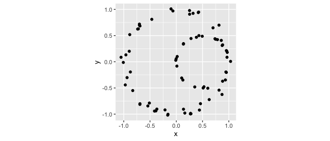
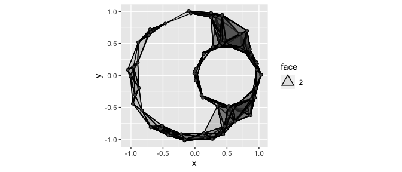
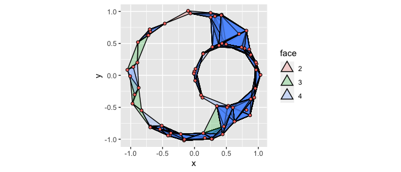
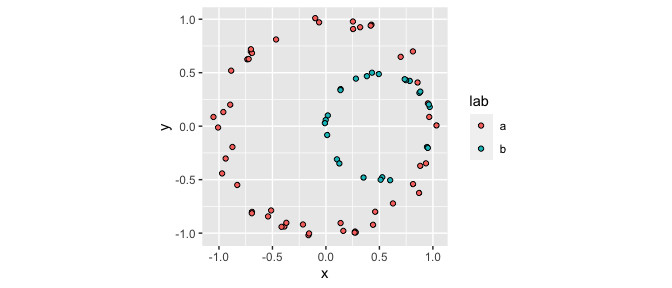
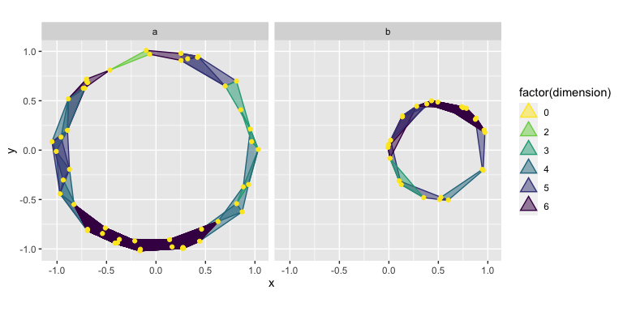
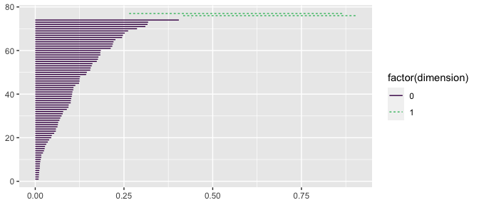
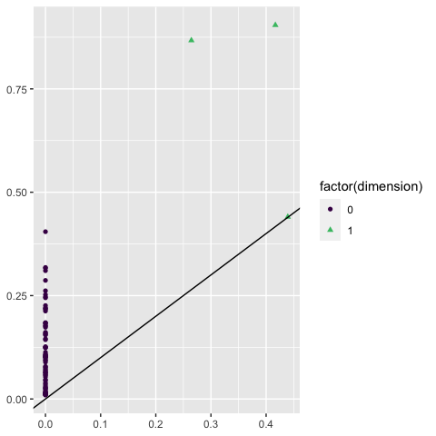
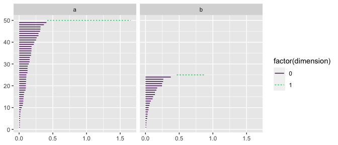
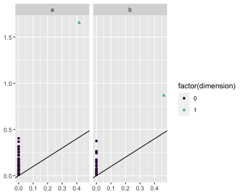

Topological analysis of grouped data and list-columns
James Otto, Jason Cory Brunson
2024-02-01
Source:vignettes/grouped-list-data.Rmd
grouped-list-data.RmdBackground
ggtda borrows some exciting features from TDAvis, which was developed independently with similar objectives. Key among these is the dataset aesthetic accepted by the persistent homology layers, which must be passed a list-column of data sets. These are then pre-processed into persistence data by the same engines that power the simplicial complex constructions.
Simplicial complexes
Let’s get started with a simple data set:
set.seed(1)
# nested circles
p1 <- tdaunif::sample_circle(n = 50L, sd = .05)
p2 <- tdaunif::sample_circle(n = 25L, sd = .025) / 2
colnames(p1) <- colnames(p2) <- c("x", "y")
p2[, "x"] <- p2[, "x"] + .5
# grouped data set
df <- rbind(
cbind(as.data.frame(p1), lab = "a"),
cbind(as.data.frame(p2), lab = "b")
)
head(df)
#> x y lab
#> 1 -0.1000961 1.0098284 a
#> 2 -0.7020036 0.6976042 a
#> 3 -0.9705862 -0.4418767 a
#> 4 0.8143332 -0.5415834 a
#> 5 0.3198463 0.9247930 a
#> 6 0.8709625 -0.6243740 a
# plot data
ggplot(df, aes(x, y)) +
geom_point() +
coord_fixed()
In TDA, it is very common to create a simplicial complex based on point cloud data. These complexes have well-defined topological features which may relate back to the probability structure governing the sample of points. Informally, the topological features of interest correspond to holes of various dimensions (or, more accurately, to “cycles”).
Typically, the Rips complex is used as it is relatively simple to compute. Loosely, the Rips complex identifies groups of \(n\) points that are all within a pairwise distance of each other as \((n-1)\)-dimensional simplexes. In ggtda, geom_simplicial_complex() plots the Rips complex for a 2-dimensional data set given a value of radius:
ggplot(df, aes(x, y)) +
geom_simplicial_complex(radius = .25) +
coord_fixed()
#> Warning: Using alpha for a discrete variable is not advised.
Notice, the object in the plot above clearly has two “holes”. This kind of insight is one of the main motivators of TDA. We’ll see more formal ways of identifying relevant features like this after we discuss persistent homology in the next section.
By default, the dimension of each simplex is communicated via opacity (the alpha aesthetic). In the next example, we’ll see how this is useful when plotting data with multiple groups. However, when we’re just interested in one complex, it can be helpful to instead map the computed variable face, a factor for polygonal objects representing simplices of dimension \(\geq 2\), to the fill aesthetic:
ggplot(df, aes(x, y)) +
geom_simplicial_complex(
mapping = aes(fill = after_stat(face)),
dimension_max = 4L,
alpha = .25, radius = .25
) +
coord_fixed()
#> Warning: Using alpha for a discrete variable is not advised.
Plotting multiple groups
Now, we’ll look at the grouped structure of the data, encoded by the group labels a and b:
head(df)
#> x y lab
#> 1 -0.1000961 1.0098284 a
#> 2 -0.7020036 0.6976042 a
#> 3 -0.9705862 -0.4418767 a
#> 4 0.8143332 -0.5415834 a
#> 5 0.3198463 0.9247930 a
#> 6 0.8709625 -0.6243740 a
tail(df)
#> x y lab
#> 70 0.7493235 0.4301084 b
#> 71 0.9621262 0.2027754 b
#> 72 0.8825077 0.3230114 b
#> 73 0.1358194 0.3371924 b
#> 74 0.7366616 0.4390625 b
#> 75 0.3827562 0.4676029 b
ggplot(df, aes(x, y, fill = lab)) +
geom_point(shape = 21) +
coord_fixed()
It is simple to plot the Rips complexes for multiple groups by mapping the group identifier to the fill aesthetic:
ggplot(df, aes(x, y, fill = lab)) +
geom_simplicial_complex(radius = .3) +
coord_fixed()
#> Warning: Using alpha for a discrete variable is not advised.
It is also possible to use the color and fill aesthetics together to color-code all simplices by dimension, including vertices and edges. This may become important as higher-dimensional simplices are computed. Typically, faceting the resulting plot is a good idea:
ggplot(df, aes(x, y)) +
stat_simplicial_complex(
mapping = aes(fill = after_stat(factor(dimension)),
color = after_stat(factor(dimension))),
dimension_max = 6L,# one_simplices = "all",
alpha = .5, radius = .3
) +
facet_wrap(vars(lab), ncol = 2) +
scale_fill_viridis_d(direction = -1, aesthetics = c("color", "fill")) +
coord_fixed()
#> Warning: Using alpha for a discrete variable is not advised.
In each example so far, the plots have depended heavily on the choice of radius. In reality, we tend to be interested in considering the topological features of complexes generated by all reasonable values of radius. This is what motivates the use of persistent homology!
Perstistent Homology
In the above animation, we see the structure of the Rips complexes change as the radii increase. For example, in the top right plot we see two disconnected components that last a couple of seconds. In the bottom right plot, the central hole is present for almost the entire animation. In the first plot, we see quite a few short-lived holes, but overall there are no features that persist for more than a few frames.
Intuitively, when the difference in “time” between a topological feature’s birth and death is larger, that is an indication that the feature might be important. A way to visualize the persistence of topological features are barcode charts. Each feature is plotted as a horizontal line, marking its birth and death in terms of the value of the Rips complex’s diameter parameter.
Below, we have computed the persistent homology of df using ripserr and plotted its barcode chart using geom_barcode().
ripserr::vietoris_rips(df[, c("x", "y")]) |>
ggplot() +
geom_barcode(aes(start = birth, end = death,
color = factor(dimension), linetype = factor(dimension))) +
scale_color_viridis_d(end = .7)
Notice the two long-lived features, the one dimensional holes. These correspond to the features we observed previously, with geom_simplicial_complex()!
Another way to plot persistent homology is persistence diagrams, in which topological features are plotted as points with \((x, y)\) values corresponding to their birth and death values:
ripserr::vietoris_rips(df[, c("x", "y")]) |>
ggplot() +
stat_persistence(aes(start = birth, end = death,
color = factor(dimension), shape = factor(dimension))) +
geom_abline() +
scale_color_viridis_d(end = .7)
Again, we see the single significant one-dimensional feature—the hole!
If we wish to summarize the persistent homology multiple data sets, ggtda provides a new mechanism: the dataset aesthetic.
The dataset aesthetic
stat_persistence(), which couples by default to the point geom but can also be coupled with geom_barcode(), accepts the optional dataset aesthetic. This aesthetic is different from typical ggplot2 aesthetics—it must point to a list column whose elements are data sets from which persistent homology can be calculated, e.g. data frames.
For example, we can nest thet points in df by lab
df_nested <-
df |>
dplyr::group_by(lab) |>
tidyr::nest()
df_nested
#> # A tibble: 2 × 2
#> # Groups: lab [2]
#> lab data
#> <chr> <list>
#> 1 a <tibble [50 × 2]>
#> 2 b <tibble [25 × 2]>This approach allows for easy faceting. See below how we plot barcode charts for each group in df:
ggplot(df_nested) +
geom_barcode(stat = "persistence",
aes(dataset = data,
color = after_stat(factor(dimension)),
linetype = after_stat(factor(dimension)))) +
facet_wrap(vars(lab), ncol = 2) +
scale_color_viridis_d(end = .7)
Similarly, we can plot multiple persistence diagrams:
ggplot(df_nested) +
stat_persistence(aes(dataset = data,
color = after_stat(factor(dimension)),
shape = after_stat(factor(dimension)))) +
geom_abline() +
facet_wrap(vars(lab), ncol = 2) +
scale_color_viridis_d(end = .7)